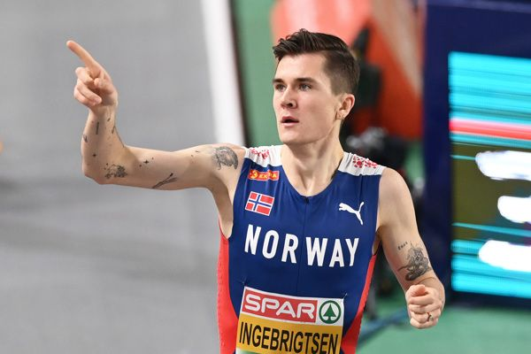
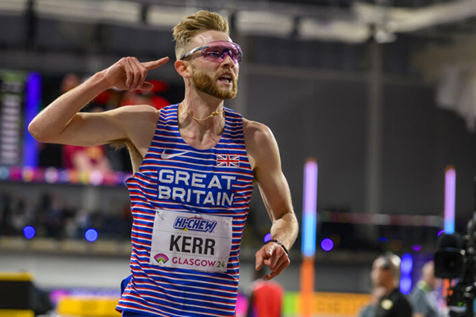
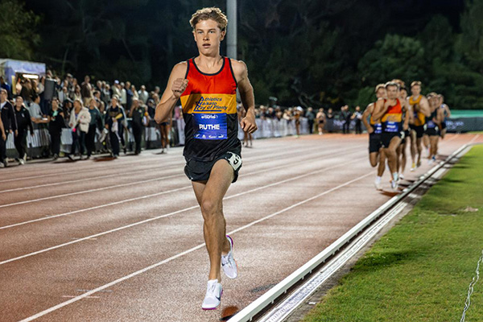

One of the most dominant middle-distance runners in the world, known for his incredible speed, endurance, and tactical racing. Coming from Norway, he rose to fame at a young age and won Olympic gold in the 1500m at the Tokyo 2020 Games. He has also broken multiple European and world records, especially in events like the 1500m and 5000m. Jakob is famous for his disciplined training style and his ability to control races from the front, making it very difficult for competitors to outkick him.

A top British middle-distance runner who competes mainly in the 1500m. He gained global attention after winning the gold medal at the 2023 World Athletics Championships, where he defeated Jakob Ingebrigtsen in a thrilling race. Kerr is known for his powerful finishing kick and smart race tactics, often staying patient before making a strong move in the final stretch. His rivalry with Ingebrigtsen has become one of the most exciting matchups in athletics.

An emerging New Zealand middle-distance runner who is starting to make a name for himself, particularly in national competitions. While he is not yet as internationally recognised as athletes like Jakob Ingebrigtsen or Josh Kerr, Ruthe shows strong potential with his steady improvement and competitive performances. As a young athlete, he represents the next generation of New Zealand runners aiming to compete on the world stage.